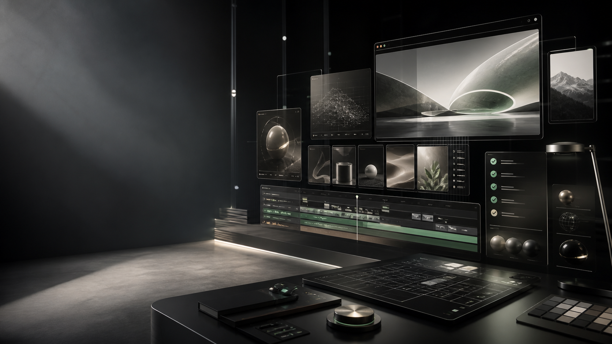

Hero Assetinterface scene


01 / Reference
这轮不是说“做得像 Awwwards”，而是明确绑定 AW Portfolio：借作品集骨架、3D gallery、hero animation、work gallery，不借它的品牌和素材。
主参考。适合把 Skill 做成动效作品集和设计引擎。
作品集方向明确，但 Awwwards 页面信息更少，不适合作为第一轮主拆对象。
更偏布局机制学习，适合备选，但不够像“Skill 产品介绍”。
02 / Gallery
页面内容不是卡片说明书，而是把“参考、Hero、真实结构、动效、验收”做成一组可浏览的设计案例。
只从 Awwwards 找 3 个具体网页候选，记录选择理由和风险。
必须说清楚主参考是哪一个网站。没有具体参考，就不能声称复刻了高级网站机制。
只有经过截图和失败复盘的规则，才写回 Skill。
03 / Process
Codex 自己推进实验，但每轮结束必须给出候选、主参考、桌面截图、自评分和下一条可写回规则。
只用 Awwwards，不能混用其他灵感库。
说明为什么选它，以及它有什么风险。
拆首屏、导航、滚动、内容模块和视觉资产边界。
用我们的真实内容重建，不复制品牌素材。
桌面端先过 4 分，再考虑写回 Skill。